1. Trip through the North of Spain
5th to 11th august de 2021
Day 1, Guadalajara to Miranda de Ebro
5th de august of 2021
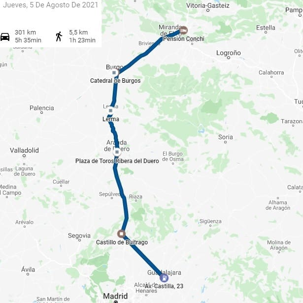
The first day's departure was from Guadalajara to Miranda de Ebro.
The first city I would arrive at would be Buitrago de Lozoya in the Community of Madrid, a city I had not been to until now, one of the few that I had left, it must be said.
The appearance in the history books is made in full reconquest in the eleventh century. It was one of the steps to reach the Muslim Madrit. Due to the position of passage, a great wall would be built around its perimeter as well as a castle of which a large part is preserved today.
In the 15th and 16th century it would gain popularity because the Buitrago lordship belonged to the Mendozas who, curiously, were from Guadalajara where they had almost all their possessions.
The town has a church, Santa María del Castillo, from the 14th century and in the Gothic style. It is one of the four that the town had in the Middle Ages. The shame of the church is that its interior was burned by the republicans in the civil war, including carvings, altarpieces and paintings. Today the roof is not the original, although it has turned out well, the only original is the one that covers the High altar.
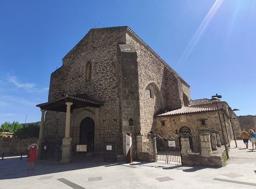
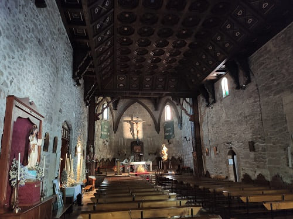
The city also has a small museum of works by Picasso since the painter had a very good relationship with his barber who was from Buitrago and he donated many paintings that he has given to the town today. And without a doubt, the highlight of the town is its wall next to the river.
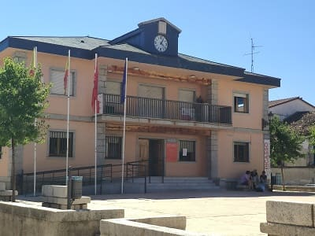
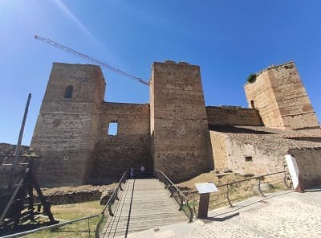
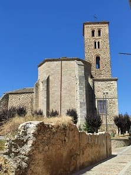
Then it would go up to the province of Burgos to reach
Aranda de Duero. Historically it is known for having been held in 1473 the Council of Aranda, with the presence of the still princess Isabel I of Castile. Also for the Aranda plan, made in 1503, being the oldest urban map in the country and the oldest cartographic document in the General Archive of Simancas, on which the development of the cities of the New World recently discovered by the Crown was based. from Castile.
It has a heritage that goes between the religious with churches with a lot of history and with a large number of historical wineries. The ancient city of Aranda de Duero was surrounded by walls of which some parts have been preserved.
The town hall, for example, is located in the central part of the wall that runs from the bridge. Today that part of the wall would be demolished and replaced by houses.
Once inside, if we go to the tourist office, we can access a
municipal museum of the history of Aranda de Duero with a large central model of the town.
The most important church is
the church of Santa María, which has one of the most impressive Spanish Gothic façades. It's actually late Gothic, straddling the renaissance. The door that is in the part of the epistle nave has a ogee arch decorated with balls and diamond points typical of Elizabethan Gothic. So that the site is illuminated there are stained glass windows and rose windows. Some stained glass windows and rose windows have human images and are probably from the 17th century. Due to the many details, it reminds us of the Palace of the Infantado in my city, Guadalajara, which is also flamboyant in style because of how ornate it is.
The current altarpiece is from the 17th century since the first altarpiece it had would burn in a fire.
In the church, what really stands out is the staircase that goes up to the choir, which is from the 16th century, in a Flamboyant Gothic style like the façade of the church.

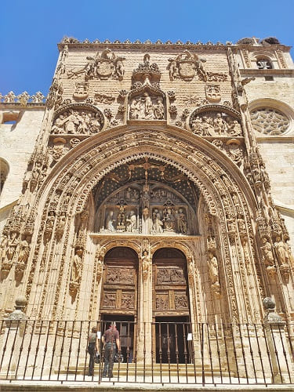
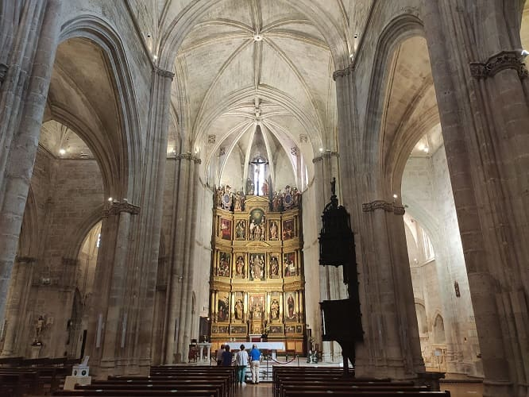
Passing the medieval bridge, one of the important churches is
the church of San Juan, which is located in front of
the Palacio de las Bolas, one of the unique buildings of Aranda . The great Gothic door with numerous archivolts stands out and in it is
the museum of sacred art of the city.
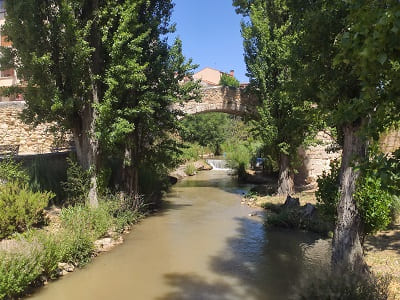
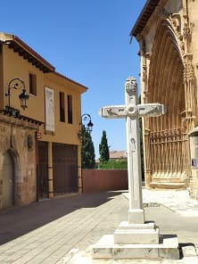
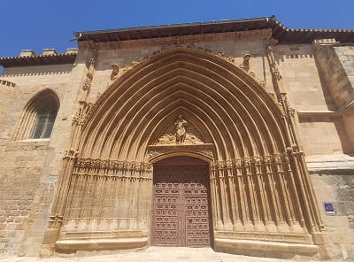
The main dish of the city is ethnological and you have to visit its numerous wine cellars with designation of origin wines. They say that this area has the best Ribera del Duero in Spain. One of the most important is the one in
the Sanctuary of the Virgen de las Viñas.
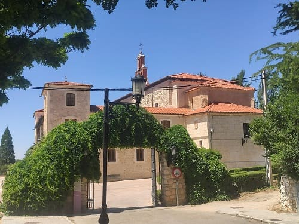
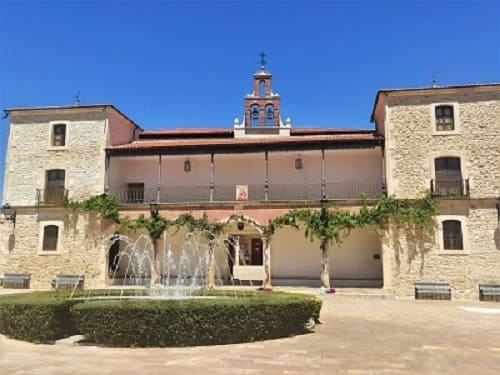
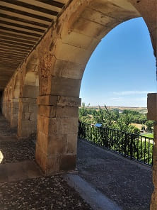
Lerma and its
ducal palace, in which Francisco de Sandoval y Rojas lived, valid of the king one of Felipe III and one of the most important men of the time. He would then order the construction of that great palace and the town of Lerma would flourish and he would be named Duke of Lerma. Since the Middle Ages, the town has been an obligatory step in the Cañada Real Burgalesa, which joins Extremadura and the Sierra de la Demanda. Lerma is a notable architectural ensemble of the Herrerian style. It has a
large main square where there are a number of restaurants with a certain medieval touch. The town has some other important churches such as
the church of San Juan. Also three cloistered convents in which more than a hundred nuns live.
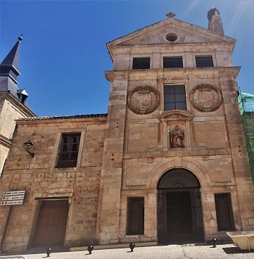
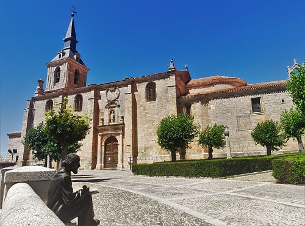
The most important thing, then, is its ducal palace. The palace was to court Valladolid (1601-1606) what El Escorial was to Madrid. During the Spanish Civil War and the first months after the war (until November 1939) the Government used the building as a prison. Recently, after a complete restoration and reform, it is enabled as a national tourism inn.
After seeing this city, I would head to Burgos, the cradle and origin of Castile and the language we speak today. The palace has four corner towers with the spiers also recovered after the rehabilitation works.
No palace could have more than two towers, except that of kings, but the Duke of Lerma was granted this privilege, such was his great power at Court. In reality it was a semi-deception of King Felipe III since the duke, during construction, requested permission from the monarch by letter to put two towers in his palace, to which he agreed. When the king later visited Lerma, he was angry when he saw that the building had four towers and asked the duke for an explanation, who replied by showing him the letter: "two correspond to me as a duke and another two that you granted me .
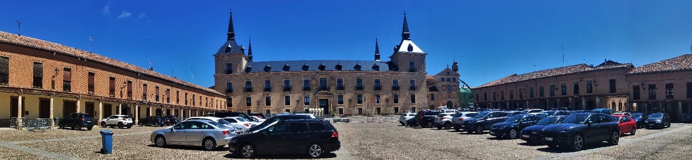
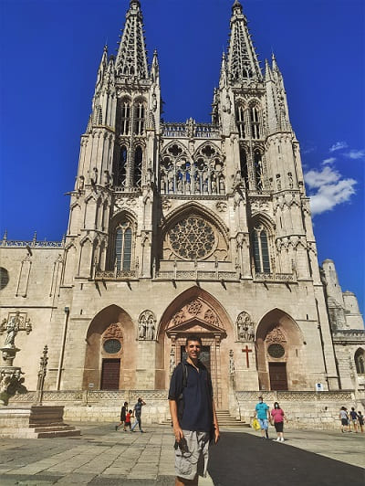
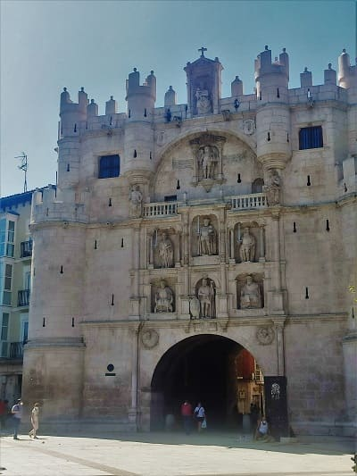
Burgos would play a prominent role and although the city is suitable for a 1-day visit, just having visited it before, you can spend 4 hours visiting its streets and some of its monuments such as its cathedral and the monastery de las Huelgas, both World Heritage Sites.
Burgos' star monument is its Gothic cathedral, which began in 1221, following French Gothic patterns. It underwent very important modifications in the 15th and 16th centuries: the spiers on the main façade, the Constable's chapel and the transept dome, elements of Flamboyant Gothic that give the temple its unmistakable profile.
There are numerous architectural, sculptural and pictorial treasures inside. Among them are:
- The Gothic-Plateresque dome, first raised by Juan de Colonia in the 15th century and rebuilt by Juan de Vallejo in the 16th, following plans by Juan de Langres.
- The Chapel of the Condestable, Elizabethan Gothic style, in which the Colonia family, Diego de Siloé and Felipe Vigarny worked.
- The Hispano-Flemish Gothic altarpiece by Gil de Siloé for the Chapel of Santa Ana.
- The large painting on panel The Holy Family by Sebastiano del Piombo.
- The choir stalls.
- The late Gothic reliefs of the ambulatory, by Vigarny.
- The many Gothic and Renaissance tombs.
- The Renaissance Golden Staircase, by Diego de Siloé.
- The Holy Christ of Burgos, image of great devotional tradition.
- The tomb of Cid Campeador and his wife, Doña Jimena, his deposit letter and his chest.
- The Flycatcher, an articulated statue that opens its mouth when the hour chimes sound.
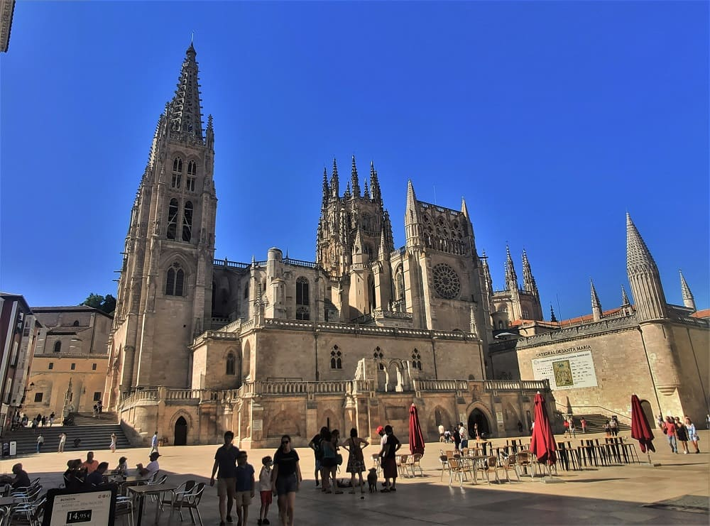
Other monuments to visit are the arch of Santa María that can be seen in the image, the bridge of San Pablo, the walls and its castle.
Another important building of Burgos architecture is the Casa del Cordón which was once the palace of the Constables of Castilla. In the building there are numerous representations of the heraldic shields of the couple who own the palace (Velasco and Mendoza), and specifically the two shields above the main door are joined by means of a Franciscan cord, also carved in stone. A cord or chains hanging on the door of a house indicate that a king has slept in it. Doña Mencía was a devotee of San Francisco and had the Franciscan cord carved. This cord is the one that, in the popular heritage, gave the building its name. It currently houses a cultural center and the headquarters and headquarters of a bank.
Numerous historical events have taken place in this building, such as the reception of Christopher Columbus by the Catholic Monarchs. The annexation ceremony of Navarra to the kingdom of Castile. Some royal weddings have been held and it has been the residence of numerous kings of Spain, although since the transfer of the court from Burgos to Toledo and later to Valladolid and Madrid, the palace would gradually lose notoriety and fall into disuse, in some cases reaching deteriorate.
Lastly, I would go to the outskirts to see the Monastery of Las Huelgas, which is one of the most historically important in Spain. It began as a Ciesternian monastery for nuns but later it would have great relevance because a Royal pantheon would be built where the most influential figures of the 13th and 14th centuries were found, such as Enrique I of Castilla, Fernando de la Cerda or Leonor de Castilla. among the most important and the kings who had it built in the central nave.
In addition to this pantheon, it has a very well-preserved Romanesque cloister which, together with that of Santo Domingo de Silos in Burgos, is the best. The walls have many details of Mudejar plasterwork, with Arabic calligraphy in various areas. The ceilings are in the Mudejar style that were added in the 15th century, when Toledo was already Castilian and this style had spread throughout the Christian peninsula. In addition to being a fortress monastery it also has a tower. In addition, like other monasteries of great importance of the time such as Guadalupe in Extremadura, the nuns dedicated themselves to creating high-quality pieces, such as dresses, or tools, or books, which can be found in the museum of Rich Medieval Fabrics in its interior. These pieces date many from the 13th and 14th century.
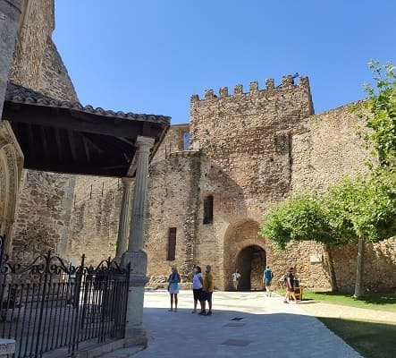
Medieval wall, s.XI.
1
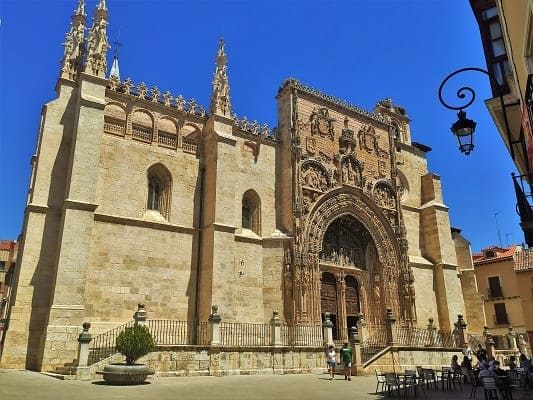
Church of santa María la Real, s.XV.
2
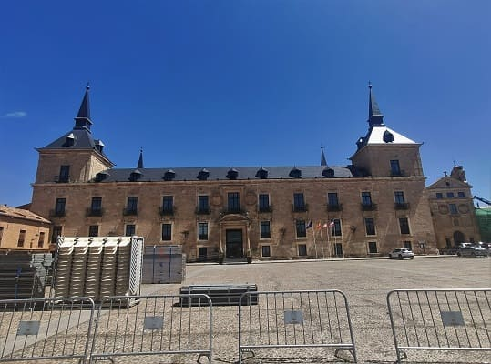
Ducal palace, s.XVII.
3
1
Cathedral and Monastery de las Huelgas.
4
Day 2, route Rioja Baja (CLICK to continue)
6th august of 2021

![[Valid RSS]](https://www.onepointsync.com/wp-content/uploads/2016/08/valid-rss-rogers.png "Validate my RSS feed")